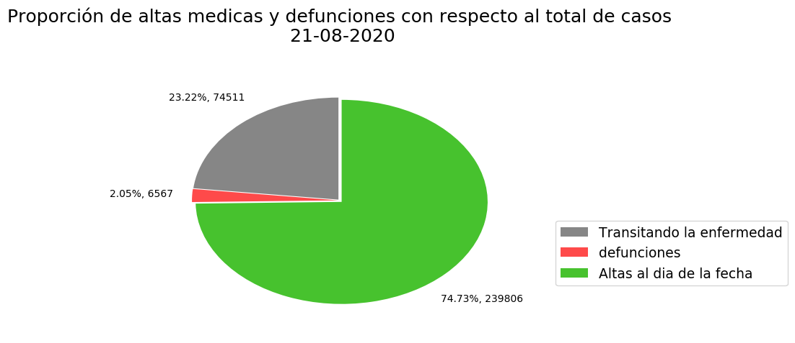

Situacion general Argentina al dia de la fecha
Al día de la fecha el total de casos confirmados en Argentina es de 320.884 (49,1% mujeres y 50,9% hombres)
Al momento la cantidad de personas fallecidas es 6.567 y el total de altas es de 239.806 personas
Por lo que al dia de la fecha la cantidad de personas infectadas es 74511

Casos Positivos Reportados para el 21/08/2020 por provincias
| Provincia |
Casos positivos reportados |
| Buenos Aires |
199.747 |
| CABA |
81.62 |
<| Catamarca |
64 |
| Chaco |
4.701 |
| Chubut |
455 |
| Córdoba |
5.272 |
| Corrientes |
239 |
| Entre Ríos |
1.861 |
| Formosa |
80 |
| Jujuy |
5.624 |
| La Pampa |
187 |
| La Rioja |
927 |
| Mendoza |
4.040 |
| Misiones |
53 |
| Neuquén |
2.020 |
| Río Negro |
4.329 |
| Salta |
1.500 |
| San Juan |
35 |
| San Luis |
39 |
| Santa Cruz |
1.178 |
| Santa Fe |
4.053 |
| Santiago del Estero |
417 |
| Tierra del Fuego |
1.600 |
| Tucumán |
837 |
| REFERENCIA OFICIAL |
Representacion grafica de los datos que antesceden